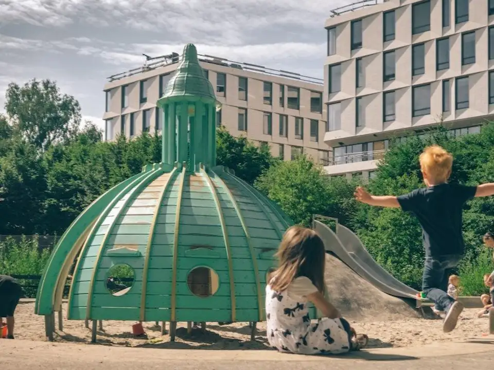
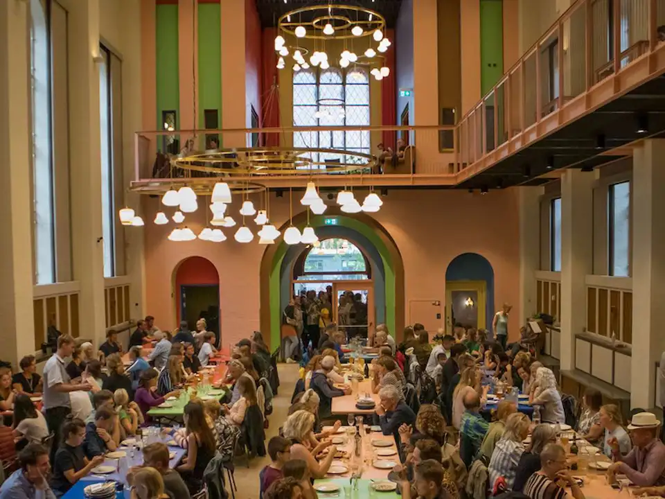

ll
Lille Liv
En lille morgen i København
God morgen,
Maja.
Maja.
Opdag · Onsdag
I dag i byen
Onsdag · 14:00
14°
Sol & mild vind — perfekt til Fælledparken

Fælledparken
0–3 år
Ude

Absalon
Familiebrunch
Plantebørnehaven
0–3 år
Inde
Åbent nu
Fælledparken
0–3 år
Ude
Plads til klapvogn
Nyt øjeblik
Privat
I dag · Fælledparken
Første smil til en blomst.
Asta · 4 mdr.
✓
Gemt til Astas journal
Astas journal
4 måneder, 3 dage
Tirsdag · Hjemme
Første gang griner højt
Mandag · Bibliotek
Højtlæsning på Blågårdsgade
Søndag · Fælledparken
Først tur uden hue
Lige tilføjet
I dag · Fælledparken
Første smil til en blomst.
M
Lille Liv · nu
Mormor sendte et hjerte til Astas øjeblik 💛
Første smil til en blomst.
Mormor
+ Far
F
Familien Lund
Du · Kasper · Mormor · Farfar
ll
Lille Liv
Find steder.
Gem øjeblikkene.
Sammen.
Gem øjeblikkene.
Sammen.
Familieguide for København · 0–6 år. Privat journal pr. barn, delt med dem I vælger.